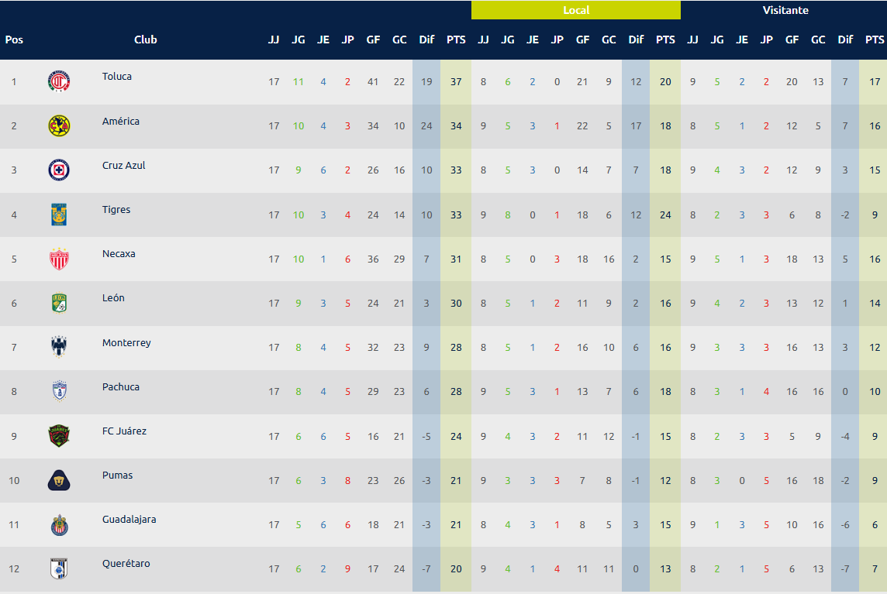
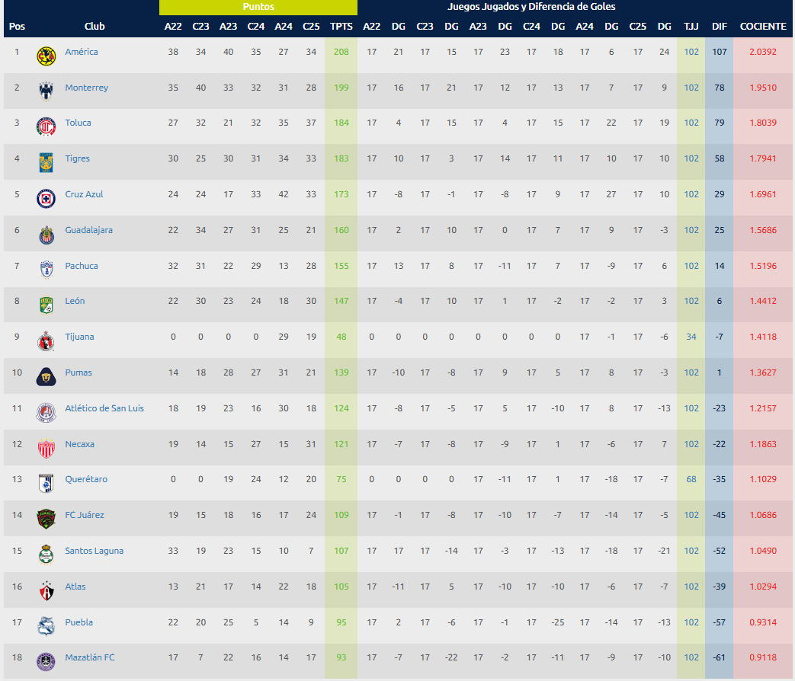

Fútbol en México: Pasión Nacional
Fútbol en México: Pasión Nacional
Información sobre equipos del país
México cuenta con una de las ligas más competitivas y apasionadas de América: la Liga MX, conformada por 18 clubes que representan diversas regiones del país. Cada uno tiene una historia, una identidad y una afición vibrante que hace del fútbol mexicano una expresión cultural intensa.
18 Equipos de Liga MX
Club América
El Club de Fútbol América S. A. de C. V. es un equipo de fútbol profesional de la Primera División de México. Fue fundado el 12 de octubre de 1916 en la Ciudad de México por estudiantes y profesores, y juega como local en el Estadio Azteca. Es el club más ganador del fútbol mexicano con 16 títulos de liga, además de 6 Copas MX, 7 Campeón de Campeones y 7 Ligas de Campeones de la Concacaf. Con una historia rica en éxitos, protagoniza el Clásico Nacional contra Chivas y es símbolo de poderío y polémica en el país.
Estadio: Estadio Banorte
Liga MX: 16
Copa MX: 6
Campeón de Campeones: 7
CONCACAF Liga de Campeones: 7
Copa Interamericana: 2
Copa Gigantes de CONCACAF: 1
Cuauhtémoc Blanco, Carlos Reinoso, Alfredo Tena, Guillermo Ochoa, Zague
Palmarés:
Ídolos históricos:
Máximo goleador:
Luis Roberto Alves "Zague" (192 goles)Club Deportivo Guadalajara
El Club Deportivo Guadalajara, conocido popularmente como Chivas, es un equipo de fútbol mexicano fundado el 8 de mayo de 1906. Tiene su sede en la ciudad de Guadalajara, Jalisco, y juega en el Estadio Akron. Es reconocido por su política de utilizar únicamente jugadores mexicanos y por ser uno de los clubes más populares del país. Cuenta con 12 títulos de liga, 4 Copas MX, 7 Campeón de Campeones y 2 Concachampions, siendo protagonista constante del balompié nacional.
Estadio: Estadio Akron
Liga MX: 12
Copa MX: 4
Campeón de Campeones: 7
CONCACAF Liga de Campeones: 2
Salvador Reyes, Javier “Chicharito” Hernández, Ramón Morales, Omar Bravo, Benjamín Galindo
Palmarés:
Ídolos históricos:
Máximo goleador:
Omar Bravo (160 goles)Deportivo Toluca
El Club Deportivo Toluca fue fundado en 1917 en el Estado de México y juega en el Estadio Nemesio Diez, uno de los más antiguos del país. Es uno de los equipos más ganadores con 10 títulos de liga, además de 2 Concachampions y una Supercopa MX. Fue muy dominante en los torneos cortos, especialmente bajo la dirección de Enrique Meza en los años 90 y 2000, con jugadores como Cardozo y Vicente Sánchez.
Estadio: Estadio Nemesio Diez
Liga MX: 10
Copa MX: 2
Campeón de Campeones: 4
CONCACAF Liga de Campeones: 2
José Saturnino Cardozo, Hernán Cristante, Vicente Pereda, Antonio Naelson "Sinha"
Palmarés:
Ídolos históricos:
Máximo goleador:
José Saturnino Cardozo (249 goles)CD Cruz Azul
El Club Deportivo Social y Cultural Cruz Azul fue fundado el 22 de mayo de 1927 en Jasso, Hidalgo, y actualmente tiene su sede en la Ciudad de México. Juega como local en el Estadio Ciudad de los Deportes y es conocido como "La Máquina". Es uno de los clubes más tradicionales del país, con 9 títulos de liga, 4 Copas MX, 3 Campeón de Campeones y 6 Concachampions. Tiene una fiel afición y una historia marcada por hazañas y finales memorables.
Estadio: Estadio Olimpico Universitario
Liga MX: 9
Copa MX: 4
Campeón de Campeones: 3
CONCACAF Liga de Campeones: 6
Carlos Hermosillo, Miguel Marín, Juan Reynoso, Benjamín Galindo, Julio César Domínguez
Palmarés:
Ídolos históricos:
Máximo goleador:
Carlos Hermosillo (169 goles)
Club León
El Club León fue fundado en 1944 en Guanajuato. Es uno de los clubes históricos del país, con 9 títulos de liga, 5 Copas MX y una Concachampions. Fue el primer campeón del profesionalismo en México y ha tenido resurgimientos importantes, especialmente en la última década con futbol vistoso y títulos bajo la dirección de Gustavo Matosas y Nacho Ambriz.
Estadio: Estadio León
Liga MX: 8
Copa MX: 5
Campeón de Campeones: 5
CONCACAF Liga de Campeones: 1
Leagues Cup: 1
Adalberto “Dumbo” López, Rafa Márquez, Nacho González, Mauro Boselli
Palmarés:
Ídolos históricos:
Máximo goleador:
Adalberto “Dumbo” López (136 goles)Tigres UANL
El Club de Fútbol Tigres de la Universidad Autónoma de Nuevo León fue fundado en 1960 en Monterrey. Juega como local en el Estadio Universitario y ha sido uno de los clubes más exitosos de la última década. Cuenta con 8 títulos de liga, 3 Campeón de Campeones y 1 Concachampions. Tiene una de las aficiones más apasionadas de México y una intensa rivalidad con Rayados en el Clásico Regio.
Estadio: Estadio Universitario
Liga MX: 8
Copa MX: 3
Campeón de Campeones: 4
CONCACAF Liga de Campeones: 1
Campeones Cup: 1
Tomás Boy, Walter Gaitán, André-Pierre Gignac, Nahuel Guzmán
Palmarés:
Ídolos históricos:
Máximo goleador:
André-Pierre Gignac (187 goles)UNAM Pumas
El Club Universidad Nacional, conocido como Pumas, representa a la Universidad Nacional Autónoma de México (UNAM). Fue fundado oficialmente en 1954 y juega en el Estadio Olímpico Universitario, en Ciudad Universitaria. Ha ganado 7 títulos de liga, 1 Copa MX, 2 Campeón de Campeones y 1 Concachampions. Es famoso por su cantera, donde se han formado figuras como Hugo Sánchez y Jorge Campos, y por su fuerte identidad estudiantil.
Estadio: Estadio Olímpico Universitario
Liga MX: 7
Copa MX: 1
Campeón de Campeones: 2
CONCACAF Liga de Campeones: 3
Hugo Sánchez, Jorge Campos, Cabinho, Manuel Negrete, Darío Verón
Palmarés:
Ídolos históricos:
Máximo goleador:
Evanivaldo Castro "Cabinho" (151 goles)Santos Laguna
El Club Santos Laguna fue fundado en 1983 en Torreón, Coahuila. Juega en el moderno Estadio TSM Corona y es uno de los clubes más exitosos en torneos cortos. Ha ganado 6 títulos de liga y una Copa MX, destacando por su estilo ofensivo y su solidez institucional. Tiene una fiel afición y ha sido protagonista constante desde los 90.
Estadio: TSM Corona
Liga MX: 6
Campeón de Campeones: 1
Jared Borgetti, Rodrigo Ruiz, Cuauhtémoc Blanco (breve paso), Oswaldo Sánchez
Palmarés:
Ídolos históricos:
Máximo goleador:
Jared Borgetti (205 goles)Pachuca
El Club de Fútbol Pachuca, fundado en 1901, es considerado el club más antiguo del continente americano. Juega en el Estadio Hidalgo y ha ganado 7 títulos de liga, 5 Concachampions y la Copa Sudamericana 2006, siendo el único equipo mexicano en lograr ese título. Es reconocido por su enfoque en formación juvenil y por su innovación institucional.
Estadio: Estadio Hidalgo
Liga MX: 7
Copa MX: 1
CONCACAF Liga de Campeones: 5
Copa Sudamericana: 1
Miguel Calero, Gabriel Caballero, Andrés Chitiva, Hirving “Chucky” Lozano
Palmarés:
Ídolos históricos:
Máximo goleador:
Franco Jara (83 goles)
Atlas
El Atlas Fútbol Club fue fundado en 1916 en Guadalajara y juega en el Estadio Jalisco. Tras una larga sequía de títulos, logró un histórico bicampeonato en 2021 y 2022, sumando 3 títulos de liga. Es reconocido por su cantera, de donde han surgido figuras como Rafa Márquez y Andrés Guardado. Tiene una afición muy leal y es uno de los clubes con más tradición en México.
Estadio: Estadio Jalisco
Liga MX: 3
Campeón de Campeones: 5
Rafael Márquez, Andrés Guardado, Oswaldo Sánchez, Aldo Rocha
Palmarés:
Ídolos históricos:
Máximo goleador:
Edwin Cubero (81 goles)Club Necaxa
El Club Necaxa, fundado en 1923, actualmente juega en Aguascalientes en el Estadio Victoria. Fue protagonista en los años 30s y vivió una época dorada en los 90s. Ha ganado 3 títulos de liga, 4 Copas MX y una Concachampions. Es un club de gran historia que busca regresar a los primeros planos del fútbol mexicano.
Estadio: Estadio Victoria
Liga MX: 3
Copa MX: 4
Campeón de Campeones: 3
CONCACAF Liga de Campeones: 1
Alex Aguinaga, Ivo Basay, Luis Hernández, Nicolás Navarro
Palmarés:
Ídolos históricos:
Máximo goleador:
Alex Aguinaga (81 goles oficiales)Club Tijuana
El Club Tijuana, conocido como Xolos, fue fundado en 2007 y juega en el Estadio Caliente con cancha sintética. Se convirtió en campeón de liga en el Apertura 2012, apenas cinco años después de su fundación, bajo la dirección de Antonio Mohamed. Es uno de los clubes más jóvenes de la Liga MX y representa la frontera norte de México.
Estadio: Estadio Caliente
Liga MX: 1
Duvier Riascos, Fernando Arce, Joe Corona, Dayro Moreno
Palmarés:
Ídolos históricos:
Máximo goleador:
Dayro Moreno (50 goles)Club Querétaro
El Club Querétaro fue fundado en 1950 y juega en el Estadio Corregidora. Aunque no ha sido campeón de liga, alcanzó la final del Clausura 2015, destacando por tener a Ronaldinho como figura en ese torneo. Ha ganado una Copa MX y una Supercopa MX, y es un club que busca consolidarse en la primera división.
Estadio: Estadio La Corregidora
Copa MX: 1
Supercopa MX: 1
Ronaldinho, Tiago Volpi, Emanuel Villa
Palmarés:
Ídolos históricos:
Máximo goleador:
Camilo Sanvezzo (53 goles)FC Juárez
El FC Juárez fue fundado en 2015 y actualmente juega en el Estadio Olímpico Benito Juárez. Surgió como club de expansión y en 2019 tomó el lugar de Lobos BUAP en la Liga MX. Aunque aún no ha ganado títulos, es un club joven con aspiraciones de crecimiento en el norte del país.
Estadio: Estadio Benito Juárez
Alfredo Talavera, Dario Lezcano
No ha ganado títulos oficiales en Primera División
Ídolos históricos:
Máximo goleador:
Dario Lezcano (31 goles)Atlético San Luis
El Club Atlético de San Luis fue fundado en 2013 y es filial del Atlético de Madrid. Juega en el Estadio Alfonso Lastras en San Luis Potosí. Aunque todavía no ha ganado títulos en la máxima categoría, ha participado en liguillas y busca consolidarse como un proyecto sólido y competitivo.
Estadio: Estadio Alfonso Lastras
Nico Ibáñez, Marcelo Barovero
No ha ganado títulos oficiales en Primera División
Ídolos históricos:
Máximo goleador:
Nicolás Ibáñez (30 goles)
Puebla FC
El Club Puebla fue fundado en 1944 y juega en el Estadio Cuauhtémoc. Tiene una historia rica en tradición, con 2 títulos de liga, 5 Copas MX y una Supercopa MX. Aunque no siempre ha sido protagonista, cuenta con una base de aficionados fiel y ha sido cuna de grandes futbolistas.
Estadio: Estadio Cuauhtémoc
Liga MX: 2
Copa MX: 5
Campeón de Campeones: 1
Pablo Larios, Carlos Poblete, Jorge Aravena
Palmarés:
Ídolos históricos:
Máximo goleador:
Carlos Muñoz (88 goles)Mazatlán FC
Mazatlán Fútbol Club fue fundado en 2020 tras la mudanza de Monarcas Morelia a Sinaloa. Juega en el Estadio El Encanto y es uno de los equipos más recientes del fútbol mexicano. Aunque aún no ha conseguido títulos, trabaja en construir una identidad propia con una imagen moderna y carismática.
Estadio: Estadio El Kraken
Nicolás Benedetti, Camilo Sanvezzo
No ha ganado títulos oficiales en Primera División
Ídolos históricos:
Máximo goleador:
Camilo Sanvezzo (24 goles)Club de Fútbol Monterrey
El Club de Fútbol Monterrey, conocido como Rayados, fue fundado en 1945 y juega en el Estadio BBVA, uno de los más modernos del continente. Ha conseguido 5 títulos de liga, 3 Copas MX y 5 Concachampions, destacándose por su crecimiento en los últimos 20 años. Tiene una gran rivalidad con Tigres y ha contado con figuras como Humberto Suazo y Rogelio Funes Mori.
Estadio: Estadio BBVA
Liga MX: 5
Copa MX: 3
Campeón de Campeones: 1
CONCACAF Liga de Campeones: 5
Humberto Suazo, Aldo de Nigris, Jesús Arellano, Rogelio Funes Mori
Palmarés:
Ídolos históricos:
Máximo goleador:
Rogelio Funes Mori (132 goles)
Partidos recientes (Clausura 2025 – fase final / play-in)
Partidos recientes (Clausura 2025 – fase final / play-in)
Tabla general/Porcentual Liga MX (2024-2025)
Tabla general/Porcentual Liga MX (2024-2025)

